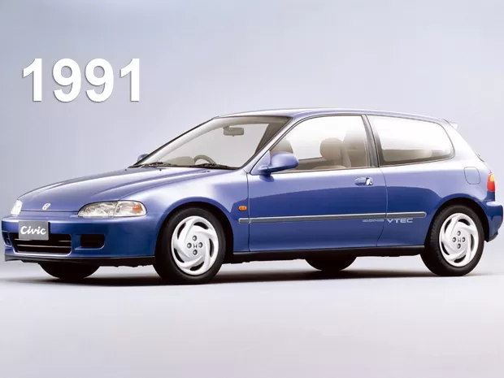

1° Geração

- Lançamento do Civic Original
- Pequeno, econômico, com foco em eficiência
- Importante na crise do petroleo
2° Geração
- Design mais moderno, maior conforto.
- Civic Wagon (perua) introduzida.
3° Geração
- Linhas angulares e novas versões esportivas (CRX, Si).
- Suspensão independente nas quatro rodas.
4° Geração
- Estilo aerodinâmico e surgimento mais amplo do VTEC.
- Reconhecido pela ótima dirigibilidade.
5° Geração

- Design mais arredondado e moderno.
- VTEC amplamente disponível
- Muito popular entre entusiastas.
6° Geração
- Mais espaço, conforto e segurança.
- Versões com motor 1.6 e 1.8L (incluindo VTEC).
- Civic Si com desempenho esportivo.
7° Geração

- Crescimento no porte e foco em conforto.
- Primeira aparição do Civic Hybrid.
8° Geração
- Design futurista (especialmente no painel).
- No Brasil: sucesso com motor 1.8 Flex.
- Civic Si com motor 2.0 VTEC (K20).
9° Geração
- Design mais conservador, foco em eficiência.
- Motor 1.8 Flex no Brasil; versões com câmbio manual e automático.
10° Geração
- Redesenho total: visual agressivo, motor 1.5 turbo.
- Interior mais tecnológico.
- Civic Touring se destaca como topo de linha.
11° Geração
- Design mais elegante e refinado.
- Civic e:HEV (híbrido) vendido no Brasil importado
- Alta tecnologia embarcada (assistentes ADAS, multimídia, etc.).